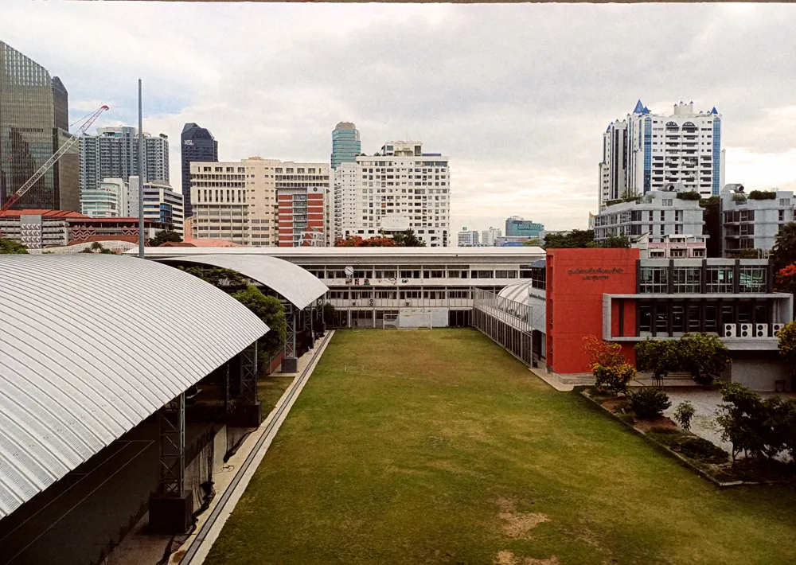
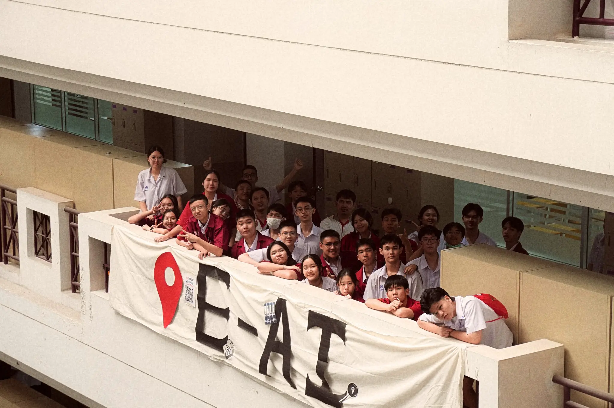
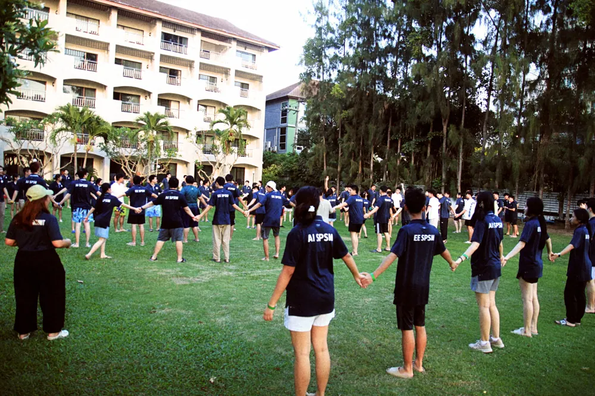

Artificial Intelligence Engineering
Satit Prasarnmit Demonstration School (Secondary)
The major builds students’ knowledge, reasoning, and technical skill in computing, automation, robotics, and AI. It blends mathematics and science with the design of AI systems and software that solve real-world problems, pairing theory with applied practice to prepare students for university.
Core objectiveAI Engineering Major, Satit Prasarnmit


Basic information

Know the major
The key facts in one place.
- 1Open toMathayom 4 – 6 (Grades 10 – 12).
- 2WhereSatit Prasarnmit Demonstration School (Secondary Division), Sukhumvit 23, Watthana, Bangkok.
- 3Class size25 students per generation, about 10 from Prasarnmit and 15 outside.
- 4Generations8 generations so far.
- 5Field trips3–5 a year, like the EEC Automation Park.
- 6Major camp3 days 2 nights every year for M.4 to M.6, with a farewell to seniors.
For your future
One of the places you can be
Where the major can take you.
- 1AI / ML engineerTrain and ship models that solve real problems.
- 2Computer vision engineerTeach cameras to see, from YOLO labs to real products.
- 3Robotics engineerDesign and control machines, the FIBO and RAI path.
- 4Embedded engineerMicrocontrollers, sensors and AI on small devices.
- 5Data scientistFind the signal in data and explain it clearly.
For graduating
Finish the major
All six by the first semester of M.6.
- 1Major campJoin at least once across the three years, and help run the major's open-house presentation.
- 2Skill-development activitiesTake part in at least 2, with proof of attendance.
- 3Contest or competitionEnter an engineering, computing or technology innovation contest, or compete in one of the same fields.
- 4Site visitJoin a school-arranged visit to a public or private organization in engineering, computing or technology.
- 5Project and exhibitionBuild a project around your own interest, then present it at an exhibition in or outside school.
- 6English proficiencySubmit at least one standard test result, such as IELTS, TOEIC, CU-TEP or TU-GET, to the major's faculty by M.6 semester 1. No minimum score.
Artificial Intelligence Engineering
Satit Prasarnmit (Secondary)
Unofficial. A student creation, not an official website of the school or the major.